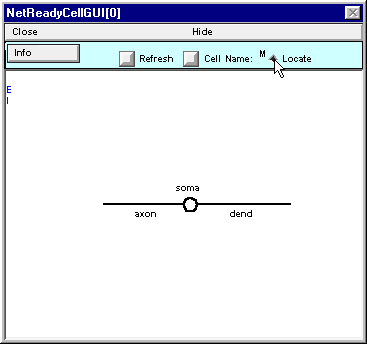
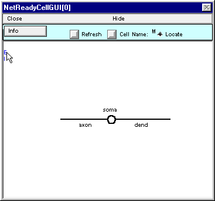
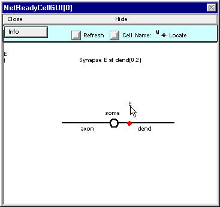
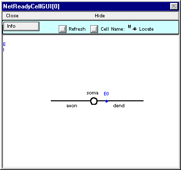
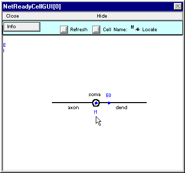
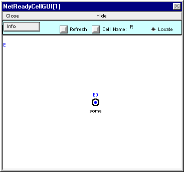

Wrapping up the M class and defining the R class.
3. Placing synapses on the M cell
According to our conceptual model, a neuron of the M cell class receives two synaptic inputs : an excitatory synapse on its dendrite, and an inhibitory synapse on its soma.
To place these, first click on the Locate button.
Place the cursor over the blue E along the left edge of the window.
Press the left mouse button and hold it down ; note the red E and the message in the window.

While holding the mouse button down, drag the red E over to the shape plot of the cell. As it approaches the shape plot, a red dot will appear on the nearest section. This dot tracks the movement of the cursor. Move the cursor until the dot is at dend(0.2) . . .
. . . then release it. The blue dot represents the location of the synapse that you just placed on the cell.
If you put more than one synapse at the same location, be sure to arrange the labels so they don’t overlap. Do this by placing the labels at varying distances above and below the blue dot. You will appreciate this separation when it comes time to create connections between presynaptic cells and specific synapses.
Now put an inhibitory synapse at soma(0.5) (“this is left as an exercise to the reader”).
What if you accidentally place a synapse of the wrong type? Just throw it away by clicking on it and dragging it out of the window.
Here’s what NetReadyCellGUI[0] should look like when you’re done.
Save a session and then Hide this NetReadyCellGUI or drag it to the side of the screen so it’s safe. Don’t Close it – the Network Builder will need it later.
The M cell class is now a network ready cell class : its anatomical and biophysical properties have been specified, the types of synapses that can attach to it have been defined, and synaptic placement has been specified.
C. We need a “Renshaw cell” class.
This will be very simple : a 10 µm diameter sphere (a single compartment with L = diam = 10 µm will do) with hh mechanism, driven by a single excitatory synapse that has the same properties as the E synapse on the motoneuron.
Or, if you prefer a table :
For all sections d_lambda = 0.1, Ra = 160 ohm cm, cm = 1 µf/cm^2.
Section L diam mechanism
soma 10um 10um hh
Do this in much the same way as you made the model of the motoneuron.
Bring up another NetReadyCellGUI. This one will be called NetReadyCellGUI[1].
Rename the cell type R.
Use NetReadyCellGUI[1]’s CellBuilder to specify the anatomical and biophysical properties. For the sake of clarity, you might also want to move the soma’s label so that it doesn’t lie right on top of the circle.
Use NetReadyCellGUI[1]’s SynTypeGUI to specify the properties of the excitatory synapse.
Place an E synapse at soma(0.5).
Save session!
The finished NetReadyCellGUI[1] should look like this.
You may hide NetReadyCellGUI[1], but don’t close it. The Network Builder will need it to exist.
Now we’re ready to make the network.